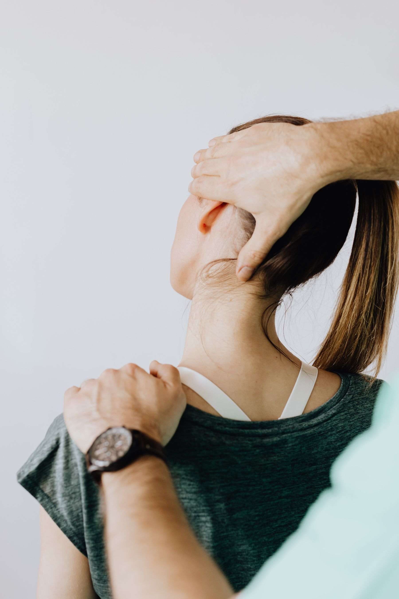

Atención domiciliaria
Evaluación y tratamiento en tu hogar, con el tiempo y el entorno que tu recuperación necesita.
Erick Barrios, kinesiólogo
Recupera tu movimiento en casa o en línea, con un plan claro y horarios que puedes revisar desde aquí.
Sesiones en un espacio tranquilo, pensadas para tu recuperación.

Sobre mí
Mis servicios
El plan se arma según tu lesión, tu energía y lo que necesitas volver a hacer. Puedes combinar visitas en casa con sesiones en línea.
Escuchamos
Partimos por tu motivo de consulta y tu día a día.
Evaluamos
Miramos movimiento, dolor y el objetivo que quieres lograr.
Tratamos
La sesión puede ser en tu domicilio o por telemedicina.
Ajustamos
Cada encuentro revisa el avance y actualiza el plan.
Evaluación y tratamiento en tu hogar, con el tiempo y el entorno que tu recuperación necesita.
Sesiones por videollamada para revisar ejercicios, dolor y avances cuando no puedes trasladarte.
Acompañamiento en lesiones, dolor musculoesquelético y procesos después de una cirugía.
Técnicas para ventilar mejor, mover secreciones y recuperar tolerancia al esfuerzo.
Trabajo progresivo para volver a entrenar con más control y menos riesgo de recaída.
Equilibrio, marcha y fuerza para las actividades que sostienen tu autonomía.
Agenda
Ayuda